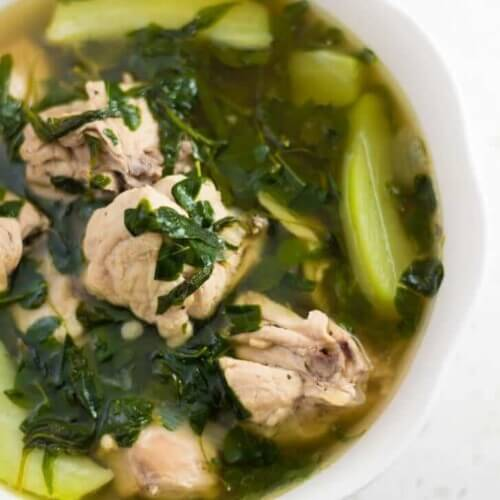

Tinoland Manok
Tinolang Manok is a great tasting and healthy dish to prepare for your family. It is easy to cook and friendly on the budget. I like the idea of having tinolang manok at least once per week (particularly during cold weather) because it keeps me stay warm and it is also one of my comfort foods.

Tinolang manok is a beloved Filipino dish known for its comforting flavors and nutritious ingredients. It features tender chicken simmered in a fragrant broth made from ginger, garlic, and onions. The dish is typically enriched with leafy vegetables like malunggay (moringa leaves) or spinach, and often includes unripe papaya or sayote (chayote) for a subtle sweetness and texture.
How to cook Tinolang Manok
Ingredients
1 kg chicken bone-in pieces like thighs or drumsticks
tablespoons fish sauce (patis)
1 medium green papaya or chayote cut into wedges
2 cups spinach or malunggay moringa leaves
Steps:
1. Saute Aromatics.
• In a large pot, heat a little oil over medium heat.
• Add the minced garlic, sliced onion, and ginger. Sauté until fragrant and the onion is translucent.
2. Add chicken
• Add the chicken pieces to the pot. Cook until the chicken is lightly browned.
3. Add Water and Fish Sauce:
• Pour in the water and add the fish sauce. Bring to a boil, then reduce the heat to a simmer.
4. Simmer:
• Let it simmer for about 30 minutes, or until the chicken is cooked through and tender. Skim off any scum that rises to the surface.
5. Add Vegetables:
• Add the green papaya or chayote. Cook for about 5-7 minutes, until the vegetables are tender.
6. Add Greens:
• Stir in the spinach or malunggay leaves. Cook for an additional 2-3 minutes until the greens are wilted.
7. Season:
• Taste the broth and adjust seasoning with salt and pepper if needed.
8. Serve:
• Serve hot with steamed rice and enjoy!